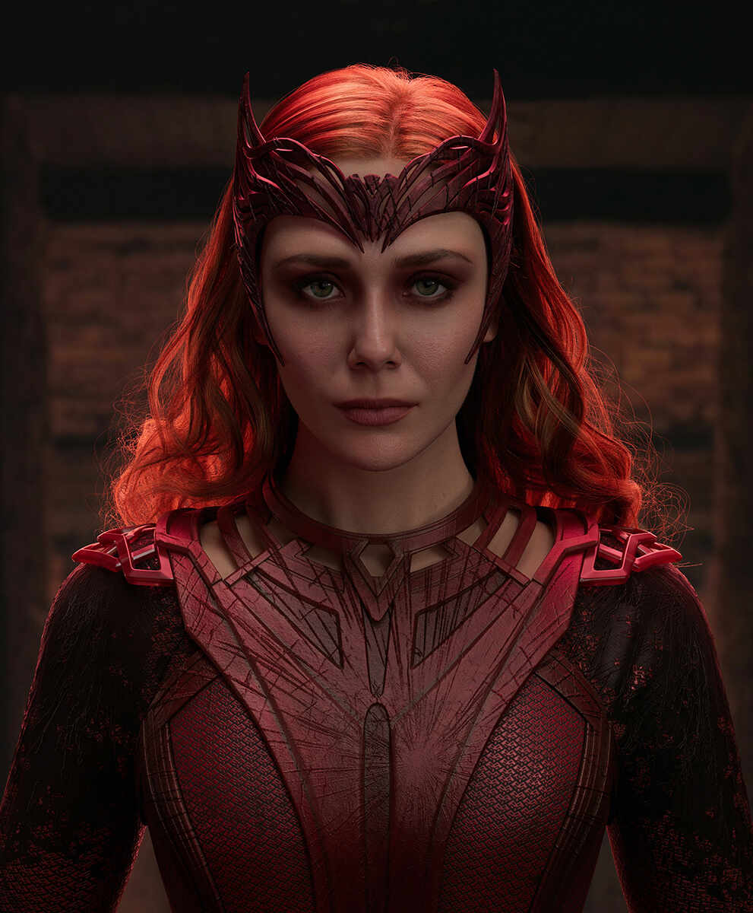

Blanca Offerrall Monje

Community Manager
Busco aplicar mi experiencia en Community Manager y mis conocimientos en Publicidad y Relaciones Públicas para
mejorarlas estrategias publicitarias. Mi objetivo es optimizar la planificación de contenidos, gestionar redes
sociales y crear copys persuasivos para fortalecer la identidad de la marca y mejorar la conexión con la
audiencia.